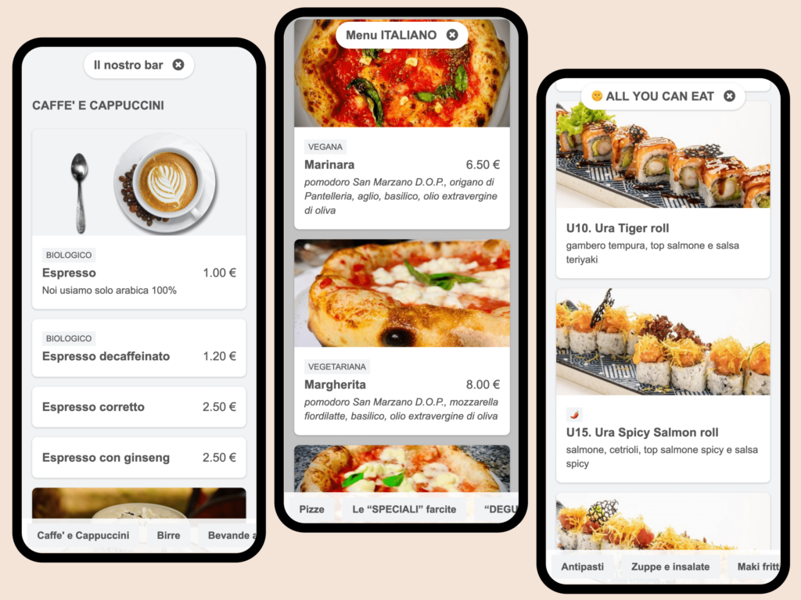
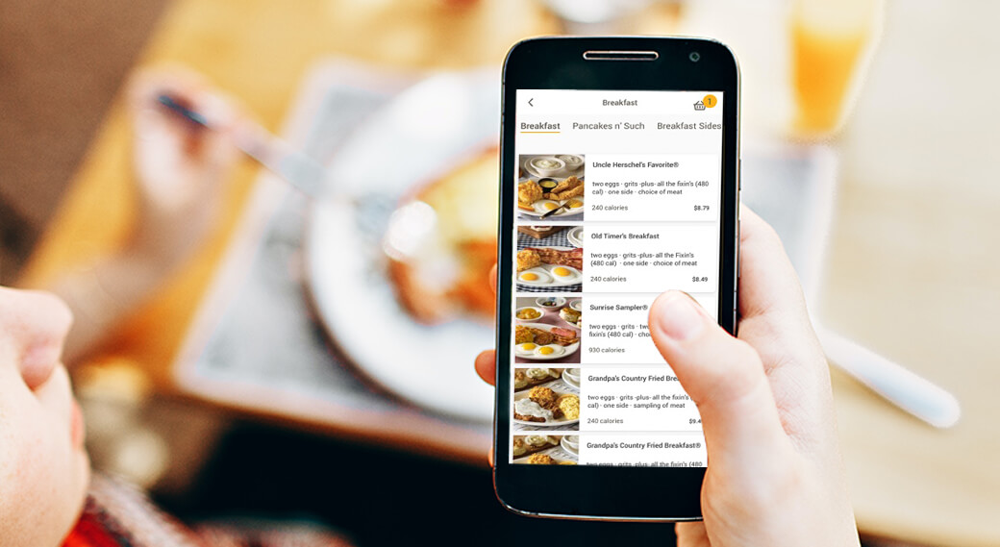

Как это работает для гостя
-
Сканирует QR-код на столе

-
Меню открывается на телефоне
 -
Гость выбирает блюда

Современно, удобно и гигиенично
Этот сайт показывает, как ваше заведение может перейти на бесконтактное цифровое меню через QR-код — быстро, удобно и стильно.
Цифровое меню — это безопасно. Бумажные меню — как купюры, проходят через десятки рук.
У нас в Казахстане много иностранных гостей — наше меню автоматически поддерживает 3 языка.
Вам ничего не нужно делать — мы сами создаём QR-код и даём вам готовый файл для печати или размещения на столах.
Ваши гости будут в восторге от удобства, а вы — от экономии. Плюс, цифровой подход — это современно и красиво.
Нет. Всё работает в браузере телефона. Никаких приложений, просто скан и готово.